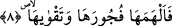

Te’vil ehline göre nefis ve onun yaratılması konusu ilerde inşaallah gelecek.
8. Ona kötülüğünü ve takvâsını ilham edene yemin ederim ki,
Âyetin başındaki “fâ” şâyet yaratılmanın sebebini bildirmek içinse durum açıktır.
Şâyet tâkıbiye fâ’sı ise herhalde bundan maksad ilhâmın dayandığı zâhir ve bâtın güçleri
tamama erdirmektir.
İlham ya Allah cihetinden ya da mele-i a‘lâ cihetinden bir şeyin kalbe atılmasıdır
(ilkâ). Kelimenin aslı bir şeyin yutulması demektir.
“Fücûr” din perdesini yırtmak demektir. Âyette fücûr kelimesinin takvâ kelimesinden
önce getirilmesi âyet sonlarındaki ses uyumuna riâyet etmek ya da fücûru uzaklaştırmaya
fazlasıyla önem verildiğinden dolayıdır. Çünkü kötülük ortadan kaldırılınca takvâ
meydana gelir. Şu halde durumu önem taşıyan öne alınmıştır.
Âyetin mânâsı şöyledir: Nefse kötülüklerini ve iyiliklerini anlatana, bunların güzel
veya çirkin olduklarını, her ikisinin insanı götürecek olduğu âkıbeti bildirene, insan
nefsini kötülük ve iyilikten dilediğini seçecek şekilde yaratana yemin ederim.
Büyüklerden birisi şöyle demiştir: İlham sâdece hayırda olur. Şer hakkında “Allah
bana şu kötülüğü ilham etti” denilmez. “Ona kötülüğünü ve takvâsını ilham edene
yemin ederim” âyetindeki “fücûra/kötülüğe” gelince, burada maksad nefse yapması
için değil sakınması için kötülüğün ilham edilmesidir. Takvânın ilham edilmesi ise onu
yapması içindir. Yoksa Allah’ın kelamında asla çelişki olmaz.
Bazıları şöyle demiştir: İlham mahallinin nefis olduğu gizli değildir. Çünkü Allah
Teâlâ “Ona kötülüğünü ve takvâsını ilham edene yemin ederim” buyurmuştur. Böylece
bize ilhamda asıl fâilin başkası değil Allah Teâlâ olduğunu bildirmiştir. Fakat nefse
kötülüğü yapması için değil bilmesi için ilham eder. Takvasını ise hem bilmesi hem de
uygulaması için ilham eder. Şu halde kötülükler hakkında ilhamı, bildirme ilhamıdır
yoksa amel etmesi için ilham değildir. “Şüphesiz, Allah çirkin işleri emretmez.” (el-
A‘râf, 7/28) Kötülükleri emretmediği gibi ilham da etmez. Çünkü Allah çirkin işleri
ilham ederse o zaman Allah’ın kullarına söyleyecek bir hucceti kalmaz. Bu âyet “Ona
iki yolu göstermedik mi?” (el-Beled, 90/10) âyetine benzer. Yani biz ona iki yolu
beyân ettik, demektir.
Bazıları şöyle demiştir: Allah nefse mubah olan hâtır ve ilhamı nisbet etmedi. Bunun
sebebi şudur: Nefis için mübah olan şeyler zâtîdir. Nefis yaratılır yaratılmaz mübah
ortaya çıkar. Dolayısıyla mübah nefsin ancak kendisiyle akledildiği kendisine âid
sıfatlardandır. Şu halde mübah hâtır insanın gülmesi gibi özel bir sıfattır.
et-Te’vîlâtü’n-Necmiyye’de der ki: Bu âyet nefislerin hepsinin bir tek hakîkat
olduğuna, hallerin ve isimlerin farklılığından farklı olduklarına işâret etmektedir. Çünkü